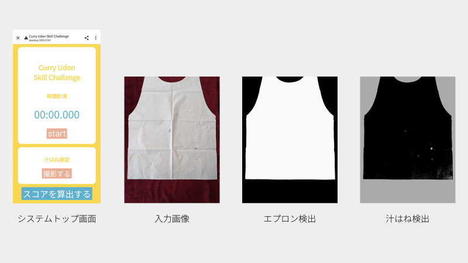

概要
カレーうどんを食した際のタイムと紙エプロンの写真を入力するとどれだけ上手にカレーうどんを食べられたかを算出するWEBアプリ。スコアの算出には私が勝手に提案したCUP（Curry Udon Performance）を用いる。特にCUP自体の検証などは行っていない。
実装
概要システムはタイマーとシミ検出の機能を持つ。WEBインタフェースの作成にHTML,CSS,JSを利用。シミ検出機能はpythonにて実装。複数人で同時にアプリを利用するためにFlaskによるWEBアプリにしてある。
画面「撮影する」を押すとカメラロールが立ち上がり、写真を撮影できる
コメント
ゼミのプログラム発表会用に制作。自分の完食タイムは5:01でした、目指せ5分切り。